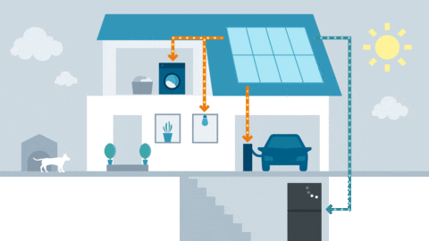
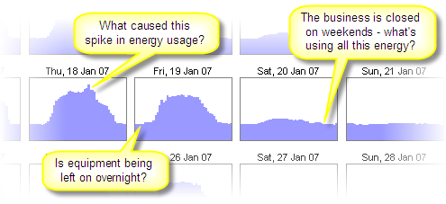
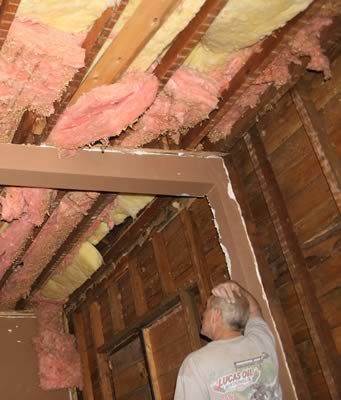
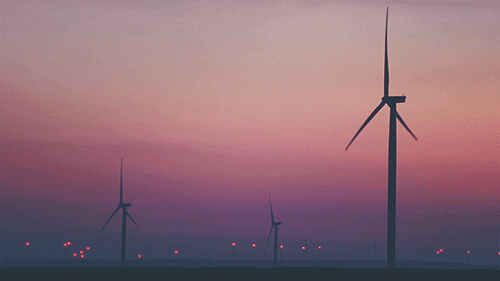
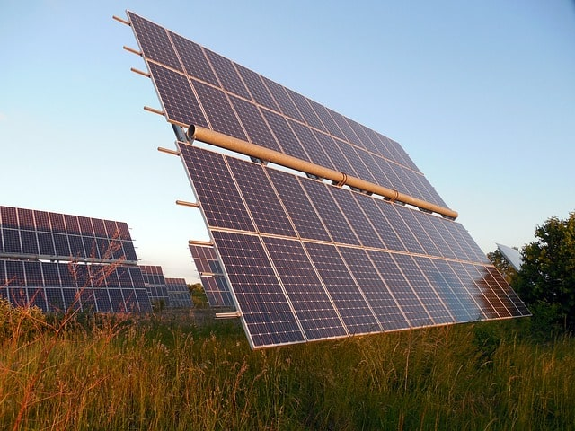

ENERGY MANAGEMENT
Energy management includes planning and operation of energy production and energy consumption units as well as energy distribution and storage. Objectives are resource conservation, climate protection and cost savings, while the users have permanent access to the energy they need. It is connected closely to environmental management, production management, logistics and other established business functions.
What is Energy Management?
"Energy management" is a term that has a number of meanings, but we're mainly concerned with the one that relates to saving energy in businesses, public-sector/government organizations, and homes:
The energy-saving meaning
When it comes to energy saving, energy management is the process of monitoring, controlling, and conserving energy in a building or organization
Typically this involves the following steps:
1. Metering your energy consumption and collecting the data.2. Finding opportunities to save energy, and estimating how much energy each opportunity could save.
You would typically analyze your meter data to find and quantify routine energy waste, and you might also investigate the energy savings that you could make by replacing equipment (e.g. lighting) or by upgrading your building's insulation.
3. Taking action to target the opportunities to save energy (i.e. tackling the routine waste and replacing or upgrading the inefficient equipment).
Typically you'd start with the best opportunities first.
4. Tracking your progress by analyzing your meter data to see how well your energy-saving efforts have worked.
(And then back to step 2, and the cycle continues...)
It's not just about saving energy in buildings – the term "energy management" is also used in other fields:
•It's something that energy suppliers (or utility companies) do to ensure that their power stations and renewable energy sources generate enough energy to meet demand
(the amount of energy that their customers need).
•It's used to refer to techniques for managing and controlling one's own levels of personal energy. We're far from qualified to say anything more about this!
•It also has relevance in aviation – it's a skill that aircraft pilots learn in some shape or form. We know nothing about aircraft energy management, but we can at least manage a picture of a man on a plane...
Home energy management
 Whilst energy management has been popular in larger buildings for a long time, it has only recently started catching on in homes. Most homeowners aren't even aware of the term, and take more of a haphazard, flying-blind approach to reducing their energy consumption...But the monitoring- and results-driven approach used by professional energy managers is just as effective in the home as it is in larger buildings.
So, if you're a homeowner looking to save energy, don't be put off by the fact that this article focuses more on non-residential buildings. Most of the principles that apply to businesses and other organizations are also applicable to homes. Certainly the four-step process introduced above and detailed below is entirely applicable to home energy management.
Why it is important?
Energy management is the key to saving energy in your organization. Much of the importance of energy saving stems from the global need to save energy – this global need affects energy prices, emissions targets, and legislation, all of which lead to several compelling reasons why you should save energy at your organization specifically.
The global need to save energy
If it wasn't for the global need to save energy, the term "energy management" might never have even been coined... Globally we need to save energy in order to:
· Reduce the damage that we're doing to our planet, Earth. As a human race we would probably find things rather difficult without the Earth, so it makes good sense to try to make it last.
· Reduce our dependence on the fossil fuels that are becoming increasingly limited in supply.
Controlling and reducing energy consumption at your organization
Energy management is the means to controlling and reducing your organization's energy consumption... And controlling and reducing your organization's energy consumption is important because it enables you to:
· Reduce costs – this is becoming increasingly important as energy costs rise.
· Reduce carbon emissions - and the environmental damage that they cause as well as the cost-related implications of carbon taxes and the like, your organization may be keen to reduce its carbon footprint to promote a green, sustainable image. Not least because promoting such an image is often good for the bottom line.
· Reduce risk – the more energy you consume, the greater the risk that energy price increases or supply shortages could seriously affect your profitability, or even make it impossible for your business/organization to continue. With energy management you can reduce this risk by reducing your demand for energy and by controlling it so as to make it more predictable.
On top of these reasons, it's quite likely that you have some rather aggressive energy-consumption-reduction targets that you're supposed to be meeting at some worrying point in the near future...
Your understanding of effective energy management will hopefully be the secret weapon that will enable you to meet those aggressive targets...
How to manage your energy consumptions?
We identified four steps to the energy-management process above. We'll cover each of them in turn:
1. Metering your energy consumption and collecting the data
As a rule of thumb: the more data you can get, and the more detailed it is, the better.
The old school approach to energy-data collection is to manually read meters once a week or once a month. This is quite a chore, and weekly or monthly data isn't nearly as good the data that comes easily and automatically from the modern approach.
The modern approach to energy-data collection is to fit interval-metering systems that automatically measure and record energy consumption at short, regular intervals such as every 15-minutes or half hour.
Detailed interval energy consumption data makes it possible to see patterns of energy waste that it would be impossible to see otherwise. For example, there's simply no way that weekly or monthly meter
readings can show you how much energy you're using at different times of the day, or on different days of the week. And seeing these patterns makes it much easier to find the routine waste in your building.
2. Finding and quantifying opportunities to save energy
The detailed meter data that you are collecting will be invaluable for helping you to find and quantify energy-saving opportunities. We've written an article that explains more about how to analyze your meter data to find energy waste.
The easiest and most cost-effective energy-saving opportunities typically require little or no capital investment.
For example, an unbelievable number of buildings have advanced control systems that could, and should, be controlling HVAC well, but, unbeknown to the facilities-management staff, are faulty or misconfigured, and consequently committing such sins as heating or cooling an empty building every night and every weekend.
(NB "HVAC" is just an industry acronym for Heating, Ventilation and Air Conditioning. It's a term that's more widely used in some countries than others.)
And one of the simplest ways to save a significant amount of energy is to encourage staff to switch equipment off at the end of each working day.
Looking at detailed interval energy data is the ideal way to find routine energy waste. You can check whether staff and timers are switching things off without having to patrol the building day and night, and, with a little detective work, you can usually figure out who or what is causing the energy wastage that you will inevitably find.

Detailed energy data is the key to finding the easiest energy savings
(chart created using Energy Lens software)
a. Use your interval data to calculate how much energy (in kWh) is being used each weekend.
b. Estimate the proportion of that energy that is being wasted (by equipment that should be switched off).
c. Using the figures from a and b, calculate an estimate of the total kWh that are wasted each weekend.
Alternatively, if you have no idea of the proportion of energy that is being wasted by equipment left on unnecessarily, you could:
i. Walk the building one evening to ensure that everything that should be switched off is switched off.
ii. Look back at the data for that evening to see how many kW were being used after you switched everything off.
iii. Subtract the target kW figure (ii) from the typical kW figure for weekends to estimate the potential savings in kW (power).
iv. Multiply the kW savings by the number of hours over the weekend to get the total potential kWh energy savings for a weekend.
3. Targeting the opportunities to save energy
Just finding the opportunities to save energy won't help you to save energy – you have to take action to target them...For those energy-saving opportunities that require you to motivate the people in your building, our article on energy awareness should be useful. It can be hard work, but, if you can get the people on your side, you can make some seriously big energy savings without investing anything other than time.
As for those energy-saving opportunities that require you to upgrade equipment or insulation: assuming you've identified them, there's little more to be said. Just keep your fingers crossed that you make your anticipated savings, and be thankful that you don't work for the sort of organization that won't invest in anything with a payback period over 6 months.

Insulation – it usually works well, even when it looks like this...
4. Tracking your progress at saving energy
Once you've taken action to save energy, it's important that you find out how effective your actions have been:• Energy savings that come from behavioural changes (e.g. getting people to switch off their computers before going home) need ongoing attention to ensure that they remain effective and achieve their maximum potential.
• If you've invested money into new equipment, you'll probably want to prove that you've achieved the energy savings you predicted.
• If you've corrected faulty timers or control-equipment settings, you'll need to keep checking back to ensure that everything's still working as it should be. Simple things like a power cut can easily cause timers to revert back to factory settings – if you're not keeping an eye on your energy-consumption patterns you can easily miss such problems.
Wind Energy Management
Wind power or wind energy is the use of wind turbines to generate electricity.
Wind power is a popular, sustainable, renewable energy source
that has a much smaller impact on the environment than burning
fossil fuels. Wind farms
consist of many individual wind turbines, which are
connected to the electric power transmission network.
Wind Energy Conservation
A wind energy conversion system (WECS) is powered by wind energy and generates mechanical energy
that sends energy to the electrical
generator for making electricity. The generator of the wind turbine can be a permanent
magnet synchronous generator (PMSG), doubly fed induction generator,
induction generator, synchronous generator, etc.
Wind energy acquired from the wind turbine is sent to the generator. To achieve maximum power from the WECS,
the rotational
speed of the generator is controlled by a
pulse width modulation converter.
The output power of the generator is supplied to the
grid through a generator-side converter and a grid-side inverter.
A wind farm can be distributed in onshore, offshore, seashore, or hilly areas.
The WECS might be the most promising DG for future SG.
Solar Energy Management
Solar Energy Management is a Tampa Bay-based consulting
firm for Solar Power Solutions and Energy Efficient technologies
throughout Florida and the Caribbean.
Solar Energy Management
will assist you in implementing proven solutions to reduce
your energy consumption.
How Solar Energy is Converted to Electricity?
The initial step to convert solar energy to electricity is to install Photovoltaic (PV) cells or solar cells. Photovoltaic means light and electricity. These cells arrest the sun’s energy and convert it into electricity. These solar cells are made of materials that show photovoltaic effect, meaning when the sun rays strike the Photovoltaic cell, the photons of light spook the electrons inside the cell triggering them to start flowing, ultimately producing electricity. The disparity between the material used to manufacture monocrystalline and polycrystalline lies in the constitution of the silicon substrate utilized to manufacture solar cells and ultimately, solar panels. As the name suggests, polycrystalline implies numerous crystals, while monocrystalline implies a single crystal. The larger the crystal sizes, the more efficient the solar cells, which explains the reason monocrystalline cells are normally 10 – 15% more efficient than the polycrystalline crystals.
Important Links :
Technical Assistance by Governemnt
• State and Local Solution Center
• Technical Assistance for Tribes
• Training for Federal Energy Managers
Financing and Incentives
• Federal Energy Management Program Funding Opportunities
• Energy and Project Procurement Development Services
• Database of State Incentives for Renewables & Efficiency
Conclusion :

The per capita energy consumption is small compared to the average of other countries which have a high human development index. However, India is bound to achieve the basic quality of life, which will also increase the CO2 emissions. In order to achieve low carbon emissions and keeping in pace with the global scenario, every service, may it be lighting, mobility or cooling, will have to be more energy efficient. And to achieve this, the areas where major savings can be made have to identified and technological interventions to achieve energy efficiency in all sectors will be necessary. Contribution of public and increased awareness, along with holistic policy environments directed by BEE, can incentivise energy efficiency effectively. Today, energy efficiency is yet to appeal to a large section of industries and the lack of benchmarks does not encourage its promotion. The demand for energy in India has been consistently increasing and there is enormous potential within sectors for energy conservation. The various policies in the recent years have been effective in reducing costs of systems, conserving energy. Some technologies might be immature and there may be certain benefits which have gone unnoticed. But despite these drawbacks, India can continue to be a surplus nation with concentration on renewable energy sources, smart technologies and promoting energy efficient solutions with proper energy management and conservation.